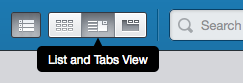
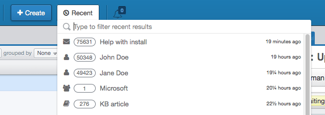

The Agent Interface has been refreshed with a cleaner header and improved navigation. The header has been reorganized and includes two new features.
On the right side are the new View Mode buttons that allow you to toggle the visibility of the three primary panes. Users with smaller screens can now use the interface more comfortably by focusing on the task at hand.

On the left side is the new Recent button that shows you tabs you have loaded recently and lets you search through them.

The Quick Search box has been moved to the right and searching for titles, subjects and names is now more accurate.